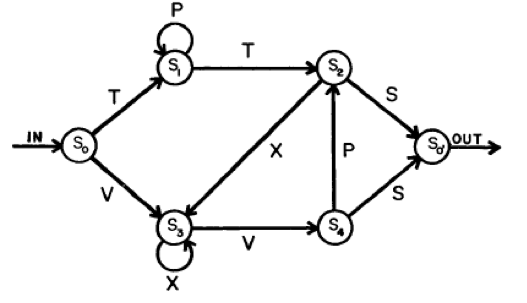
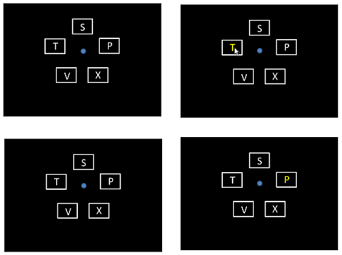

Part 1#
This is a finite-state machine (a.k.a. finite state automaton). 
Some examples of legal (grammatical) strings that it can generate:
VXXVPS
TPPPTS
VXXVPS
TPTXXVPXXVPS
TPPPTXXVS
VXXVS
Here is a sample list of legal sequences
And here are some examples of illegal (ungrammatical) strings:
XVS (first letters can only be T or V)
TPPP (terminator has to be an S)
TPTPS (TPT gets us to S2 from which we can go to only X or S)
For the first part of this exercise, please break into groups and write some pseudocode for a script that will:
(1) generate words that obey the grammar of the automaton above (2) allow you to input a string and return whether a string obeys the grammar (True) or not (False)
Begin by spending 10 minutes outlining your code. Think about what you need to define when to make the automaton? What kind of data structure(s) will you need? What methods will you need to implement?
Now let’s get coding! Let’s implement a finite state machine using the starter code below. Once fully implemented (which we will do next), we’ll use this class (yep, you’ll want to make your code object-oriented) for programming a basic artificial-grammar learning task.
Then let’s start coding! To help get you started, here’s what my __init__ looks like.
import random
class StateMachine:
def __init__(self):
self.start_state = None
self.current_state = None
self.state_transitions = {}
self.states = []
self.end_states = []
def add_state(self, name, start_state=0, end_state=0):
"""Add a new state normal by default; start_state or end_state.
Make sure to update self.current_state and self.end_states
"""
if
pass
def add_transition(self, current_state, next_state, value):
"""Add a transition from current_state to next_state with value 'value'"""
pass
def test_path(self,path):
"""Test a word (path through the FSM), returning True
if it's grammatical and False if not
"""
pass
def generate_word(self,randomSeed):
"""Generate a legal word"""
random.seed(randomSeed)
myPath=""
#your code here that generates a random (legal) word
return myPath
Part 2#
Next, we’ll implement a simple artificial-grammar learning task. Participants see letters in boxes around a central point. The letters change colors (from white to yellow) in the order specified by the string generated by the automaton. The participant’s task is to click on the letter currently appearing in yellow, as quickly as possible. Learning the grammar is measured as a gradual speeding up in processing of legal sequences and slowing down in the processing of illegal ones. The image below shows a sequence of frames of what it looks like.

For this part, simply study the code below. It’s written in an object-oriented style to get you used to this way of coding. This bit of code will show the letters in white. When you click on a letter, it will temporarily turn it yellow. Make sure you understand what each line is doing. This code does not yet make use of the automaton for determining which letter should turn yellow.
from psychopy import visual, core, event,sound, misc
import numpy as np
class Exp:
def __init__(self):
self.win = visual.Window((1024, 768), color = 'black')
self.myMouse = event.Mouse()
self.myMouse.setVisible(1)
self.letterList = ['S', 'T', 'V', 'X', 'P']
radius=125
degreesPerItem = 360.0/len(self.letterList)
degrees = np.arange(90,360+90, degreesPerItem)
self.locations=[misc.pol2cart(degree, radius) for degree in degrees]
def setFixation(self):
self.fixation = visual.Circle(self.win, size = (20, 20), pos = (0,0), fillColor = 'blue', units="pix")
def setRectangles(self, height, width):
"""Create rectangles (visual.Rect) of height and width size and set their positions. Returns a list of rectangles """
self.rectangles = [visual.Rect(self.win, size = (width, height), lineColor = 'white', fillColor="black", units="pix") for _ in range(len(self.letterList))]
[rectangle.setPos(location) for rectangle,location in zip(self.rectangles,self.locations)]
def setLetters(self,colors=[]):
"""Create letters (visual.TextStim) and set their positions. Returns a list of letters (TextStim objects) """
if not colors:
colors=['white']*len(self.letterList)
self.letters = [visual.TextStim(self.win, text = letter, color = colors[letterNum], units = 'pix') for letterNum,letter in enumerate(self.letterList)]
[letter.setPos(location) for letter,location in zip(self.letters,self.locations)]
def colorLetter(self,whichLetter,color='yellow'):
"""Color a given letter"""
colors = ['yellow' if whichLetter==curLetter else 'white' for curLetter in self.letterList]
self.setLetters(colors)
def drawStims(self,stims):
[stim.draw() for stim in stims]
def checkMousePress(self):
letterPressed = [i for i,rectangle in enumerate(self.rectangles) if self.myMouse.isPressedIn(rectangle)]
if letterPressed:
return self.letterList[letterPressed[0]]
else:
return False
exp = Exp()
while True:
exp.myMouse.clickReset()
exp.setFixation()
exp.setRectangles(70, 100)
exp.setLetters()
exp.drawStims([exp.fixation]+exp.rectangles+exp.letters)
exp.win.flip()
responded=False
while not responded:
if exp.myMouse.getPressed()[0] == 1:
responded=True
letterPressed = exp.checkMousePress()
if letterPressed:
exp.colorLetter(letterPressed)
exp.drawStims([exp.fixation]+exp.rectangles+exp.letters)
exp.win.flip()
core.wait(.5)
if event.getKeys(keyList = 'q'):
print "tying to exit"
core.quit()
Part 3#
Now let’s combine Parts 1 and 2 into a little experimental task.
Modify the code in part 2 to import the automaton class, set up the automaton shown in the image above, and generate a sequence of words. You should then read in these words, iterating through each word letter by letter. The current letter should turn yellow. Once the subject clicks on it, it should return to white. The response (see below) should be recorded, and
after a delay (let’s say, 500 ms) the next letter should turn yellow. Only advance to the next letter when the active letter is clicked. If the subject clicks on the wrong letter, do not advance.
For example, if the current word is VXXVS, make the ‘V’ yellow. Then when the participant clicks on it, make the V white again, and X yellow, etc.
Include a break screen in your code: Every 5 minutes, display a text screen saying “Please take a short break. Click a mouse button to continue”
Your output file should have the following columns:
subject code
seed (for shuffling the grammaticalStates list)
total number of letters in the current word
word number (1 for first word, 2 for second etc.)
position within current ‘word’ (i.e., 1 = first letter, 2 = second letter, etc.)
current letter
current string (all the letters in the current trial)
x coordinate of the active letter
y coordinate of the active letter
Are we on the last letter for the string (True/False)
RT (in ms)
There’s no accuracy column because only correct responses are being recorded.
For this exercise, we won’t be implementing the test session which would intermix legal and illegal strings